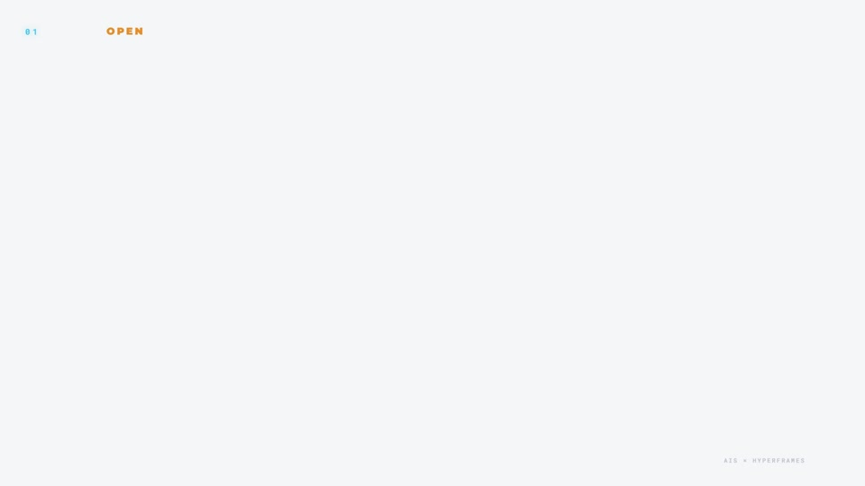
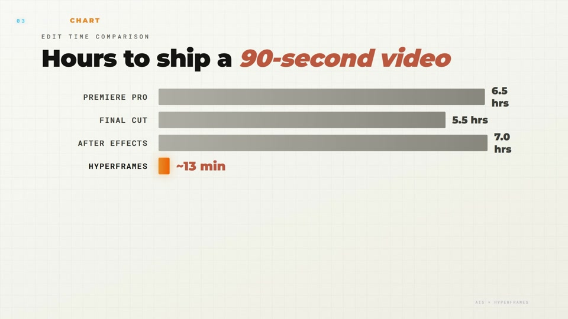
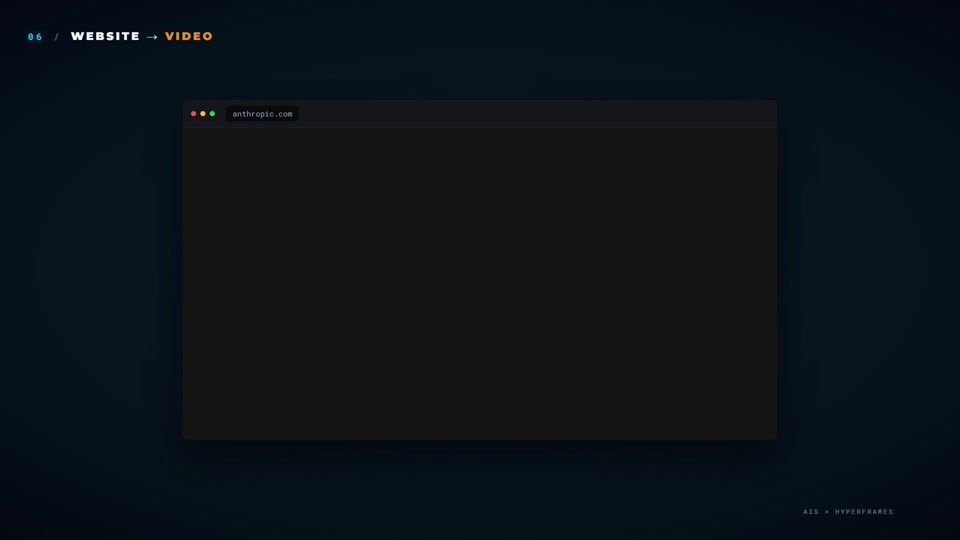
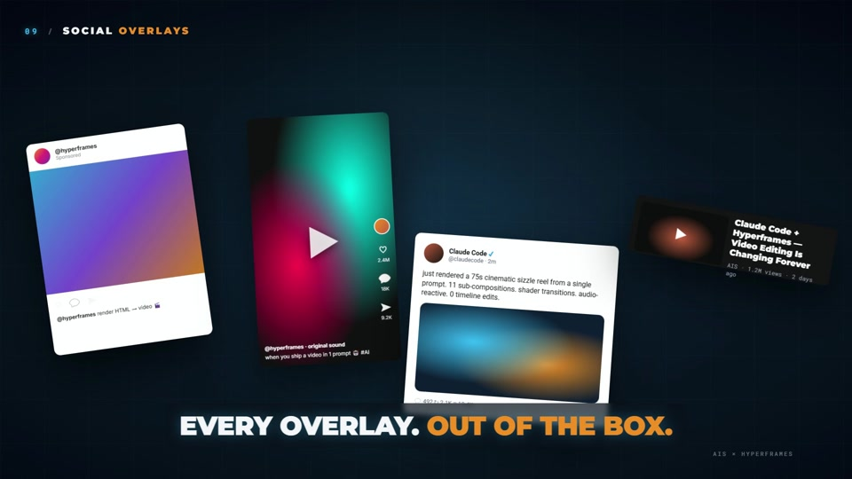
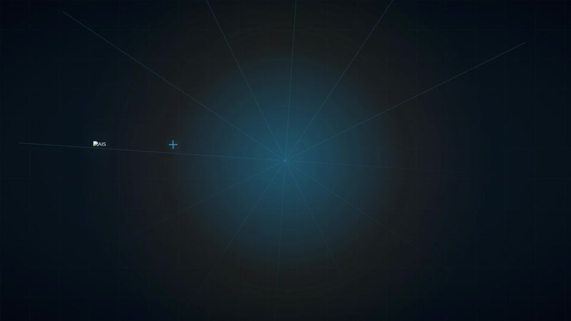

🎥 Exemplo de campanha integrada
O hyperframes-sizzle foi produzido via fluxo /website-to-hyperframes — um sizzle reel que herda visual DNA da landing do Hyperframes. É o modelo mental para seu projeto final.
🔍 Frames-chave





🎯 Briefing do produto
Briefing fraco produz peças fracas. 20 minutos de definição clara no início economiza horas de retrabalho depois.
📝 Template de briefing
# Briefing do Projeto Final
## Produto/Serviço
[Nome + 1 frase de posicionamento]
## ICP (Ideal Customer Profile)
[Quem é o cliente ideal? Papel, contexto, dores]
## Problema
[O que especificamente dói para esse cliente?]
## Valor (value prop)
[O que você entrega? Em 1 frase]
## Diferencial competitivo
[Por que você vs alternativas?]
## Tom de voz
[3 adjetivos: ex. "confiante, direto, humano"]
## CTA principal
[O que quer que a pessoa faça depois de ver?]🖼️ Landing page no Claude Design
A landing é a âncora visual das outras peças. Deck e vídeo herdarão hex codes, tipografia e motif daqui.
🚀 Fluxo
- Invoque
/design-designercom briefing em mãos - Responda as 10 perguntas
- Cole prompt gerado em claude.ai/design
- Peça 4 variações safe-to-wild
- Escolha uma e itere com Tweaks (3-5 dimensões)
- Exporte para Claude Code (se for customizar mais) ou PDF/PNG
✓ Entregáveis desta etapa
- • PNG/PDF da landing page final
- • Screenshot das 4 variações para documentação
- • Hex codes + font names extraídos em texto
- • 1-2 motifs visuais identificados (shape, cor, tipografia)
📊 Pitch deck 7-10 slides
Pitch deck no Claude Design, importando a landing page anterior como contexto. Deve herdar paleta, tipografia e motif da peça 1.
📑 Estrutura canônica (7 slides)
- Título — nome + posicionamento
- Problema — concreto, específico
- Why Now — momentum atual
- O que fazemos — 1 frase + visual
- Tração — números, logos, gráficos
- Time — fotos + contexto
- Ask/Próximos passos — CTA específico
💡 Cross-piece consistency
No prompt do deck, mencione explicitamente: "Import a landing page Claude Design project [nome/URL] as context and extract palette, type, and visual motif to inherit."
🎬 Vídeo promo 30-60s
O clímax do curso. Vídeo Hyperframes aplicando todas as 11 regras do Render Contract, todas as 10 Leis do MOTION_PHILOSOPHY, motif compartilhado com landing e deck.
🎯 Loop completo
# 1. Copiar projeto base (o mais próximo do que você quer)
cd video-projects
cp -r clickup-demo minha-campanha-final
# 2. Substituir assets e texto
cd minha-campanha-final
# Edite index.html, compositions/, assets/
# 3. Loop de autoria
npx hyperframes lint # zero errors
npx hyperframes preview # eyeball live
npx hyperframes render --quality draft --output renders/draft.mp4
# 4. Verificação visual
mkdir -p renders/frames
for t in 2 5 10 15 20 25; do
ffmpeg -y -ss $t -i renders/draft.mp4 -frames:v 1 -q:v 2 "renders/frames/t${t}.png"
done
# Abrir cada PNG e verificar
# 5. Final render
npx hyperframes render --quality standard --output renders/final.mp4✅ Consistência entre as 3 peças
Antes de publicar, auditoria lado a lado das 3 peças. Inconsistência destrói percepção de profissionalismo.
🔍 Checklist de auditoria
- ☐Mesmo hex code primary nas 3 peças
- ☐Mesma tipografia headline
- ☐Motif visual aparece em pelo menos 2/3 peças
- ☐Tom de voz alinhado (confiante / direto / humano)
- ☐CTA principal é o mesmo
- ☐Callback narrativo: landing→deck→vídeo contam a mesma história
🚀 Publicação e rubrica
Produzir sem publicar é incompleto. Publicar sem autoavaliação perde aprendizado estruturado.
🌐 Onde publicar
- •Landing: Vercel (grátis, instant deploy, domain bonito)
- •Deck: PDF no Drive/Notion ou Pitch.com
- •Vídeo: YouTube unlisted, Vimeo, ou Drive com link público
- •Repo: GitHub (público ou privado) com README explicando
📊 Rubrica de autoavaliação (100 pontos)
Sistema de marca consistente
25 ptsMesmas cores, tipografia e motif nas 3 peças
Narrativa coerente
20 ptsLanding → Deck → Vídeo contam a mesma história no seu formato
Motion discipline
20 ptsPre-flight MOTION_PHILOSOPHY passou. 10 Leis aplicadas
Qualidade técnica
15 ptsLint zero erros. Render standard. Frames verificados
Scroll-stop hook
10 ptsPrimeiros 2s do vídeo e primeira dobra da landing prendem atenção
Callback narrativo
10 ptsFim referencia início em pelo menos 2 peças
Certificação: Nota ≥70 pontos com as 3 peças publicadas = projeto completo.
🎓 Fim do Curso — o que você conquistou
Próximos passos após o curso:
- Estudar projetos AIS pesados (aisoc-hype, golden-ratio-demo)
- Montar pipeline com producer para renders em batch via API
- Integrar com n8n para automatizar briefings → renders
- Adaptar o plano do curso para seu próprio público